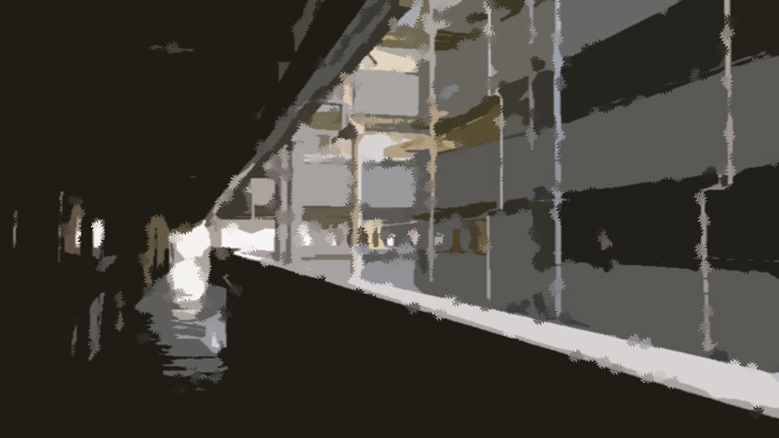
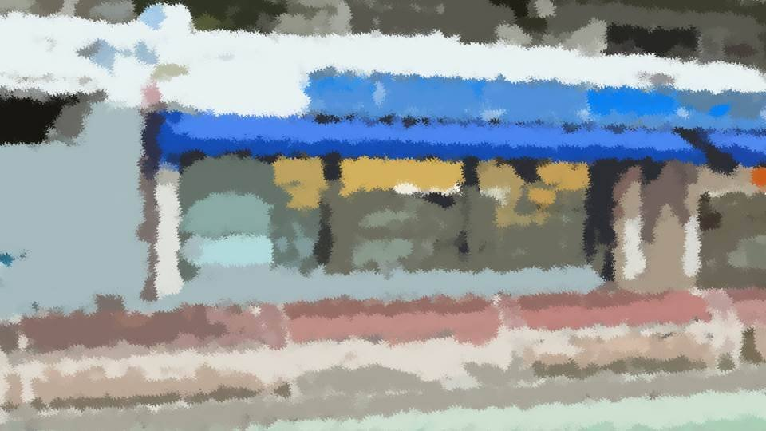
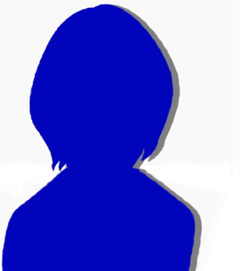

I'm Sorry.

On the outside walkway, there was no sign of Haruka.
I put the key in the mailbox for Haruka's home.
It has a dial lock, so no one but the Niimuras can open it.
It has a dial lock, so no one but the Niimuras can open it.
Haruka's bike had been left sitting in the bike parking area.
If she forgot even her phone, she probably didn't have her bike key either.
If she forgot even her phone, she probably didn't have her bike key either.
―For a while, I walked along the prefectural road.

5 minutes later, I arrived at the convenience store nearest to home.
On the bench in front of the convenience store―
On the bench in front of the convenience store―

sat Haruka.
Just as I'd expected. I haven't been her best friend all these years for nothing.
Without a word, I stood beside Haruka.
Just as I'd expected. I haven't been her best friend all these years for nothing.
Without a word, I stood beside Haruka.

"Oh, Natsumi...
Uh...
Sorry..."
I sat down on the bench too, and looked closely at Haruka's half-lowered face, peering in.
I sat down on the bench too, and looked closely at Haruka's half-lowered face, peering in.
"Me too, Haruka, the moment I thought you were acting strange, I should have noticed. I'm sorry."
"No, Natsumi, it's wrong for you to apologize... Huh?
"No, Natsumi, it's wrong for you to apologize... Huh?
Is it okay for you to be outside?"
"Yeah, I seem to be doing well today. Staying shut up at home all the time would be even less healthy, anyway."
"If so, that's good..."
Haruka, at last, showed me a faint smile.
"Hey, Haruka, since we're out anyway, let's take a little walk. It's exactly at times like this that you have to get some fresh air!"
"If so, that's good..."
Haruka, at last, showed me a faint smile.
"Hey, Haruka, since we're out anyway, let's take a little walk. It's exactly at times like this that you have to get some fresh air!"

"Hey now, is that any way for an April-sickness patient to talk?" [TN: A pun on gogatsu-byo, 'May sickness,' Japan's term for the May blues.]
We laughed together a little.
We laughed together a little.
"If you like, Haruka, should we go to Central Park, since you wanted to go?"
"No, on foot it's really too far, so just wandering around here is fine.
Oh! Natsumi, what about the house key!?"
"I locked up and put it in the mailbox."
"Haah, then it's all right."
Haruka showed an expression of relief.
But,
"I locked up and put it in the mailbox."
"Haah, then it's all right."
Haruka showed an expression of relief.
But,
"Oh! I forgot my phone!"
"Yeah, I noticed it was there, but I didn't want us to miss each other, so I left it."
Come to think of it, I had forgotten my phone too. All I had was my wallet.
"Yeah, I noticed it was there, but I didn't want us to miss each other, so I left it."
Come to think of it, I had forgotten my phone too. All I had was my wallet.

"Hmm, forget my phone, I don't even have my wallet or keys... I embarrassed myself a while ago trying to buy a drink..."
"Ahaha! Wait here a sec."
"Ahaha! Wait here a sec."
Saying so, I went into the convenience store.
I know Haruka's favorite drink.
I know Haruka's favorite drink.
"Here!"

I put a Super Soda Bomber into Haruka's hand.
Packed in a thick can just like an oxygen tank, a super, super super super intense carbonated drink.
Other people rate it terribly, but Haruka loves it and drinks it often.
For someone who can't handle spicy food, she apparently likes this kind of thing.
Packed in a thick can just like an oxygen tank, a super, super super super intense carbonated drink.
Other people rate it terribly, but Haruka loves it and drinks it often.
For someone who can't handle spicy food, she apparently likes this kind of thing.
"Ooh! That's my best friend! Thank you!"
I stared at the face of Haruka, happily about to open the cap.
I stared at the face of Haruka, happily about to open the cap.
"What is it?"
"No, it's nothing!"
"Weirdo."
Haruka gave the Super Soda Bomber's cap a hard twist.
"No, it's nothing!"
"Weirdo."
Haruka gave the Super Soda Bomber's cap a hard twist.
With force, the liquid inside spurted out straight at Haruka's face.
"Bwahpff!"
"Ahahahaha!"
"Ahahahaha!"
"Cough! You! You totally shook it before you handed it over!"
"Who knooows!"
As you may have guessed, I actually did shake it, just a little, out of mischief.
Haruka's clothes and head were sopping wet.
"Who knooows!"
As you may have guessed, I actually did shake it, just a little, out of mischief.
Haruka's clothes and head were sopping wet.
"What do you think you're doing! All that precious fizz is gone!"
"That's what you're upset about?!"
Apparently she minded the fizz going flat more than her clothes and head getting dirty.
"That's what you're upset about?!"
Apparently she minded the fizz going flat more than her clothes and head getting dirty.
"Fizz is this drink's life, isn't it!? Wasting that fizz is nothing but blasphemy!
Geez, really, why is there nobody who understands this!"
Holding forth on and on, passionately, about the wonders of fizz that no one could understand: Haruka.
I listened to it, chiming in with a yes, yes.
With her face, hair and clothes still soaked, the sight of her passionately going on about the wonders of fizz was terribly comical.
I listened to it, chiming in with a yes, yes.
With her face, hair and clothes still soaked, the sight of her passionately going on about the wonders of fizz was terribly comical.

―Maybe satisfied after saying her piece, Haruka looked up at the sky.
"Somehow, I just remembered something from way back.
When we were little, back when you still didn't hate cherry blossoms, Natsumi, we drank juice together at hanami, didn't we."
"Did... we?"
"Did... we?"

"That time too, Natsumi, you spilled my juice.
I bawled my eyes out, but Natsumi, you just looked blank, like you didn't know what had happened..."
"I don't remember that at all.
Or rather, sorry, to think I did something like that..."
"Hahaha! I'm not blaming you, I said! It just takes me back, that's all."
"Hahaha! I'm not blaming you, I said! It just takes me back, that's all."
"My dad passed away a long time ago.
Natsumi, you probably don't remember, but it was while we were living here, in an accident."
"Huh...?"
"Huh...?"
"Well, that's what started it, and right after the accident we ended up moving.
Megasawa was closer to my dad's family home than here, and there was a good hospital to heal my mom's heart.
Natsumi, you didn't understand any of it, and because I was moving away... you bawled before I left."
"Was it like that..."
"Was it like that..."
"Sorry, for not telling you until now. A lot happened, and my mom told me not to say anything.
Unhappy things like that, we'd tell after we grew up, she said."
"No, thank you for telling me. Now, no more secrets, right!"
"No, thank you for telling me. Now, no more secrets, right!"
"Yeah... right..."
It seemed to me that Haruka's face clouded over.
There must still be something she can't say.
But, that's something Haruka can tell me whenever she feels like telling it.
It seemed to me that Haruka's face clouded over.
There must still be something she can't say.
But, that's something Haruka can tell me whenever she feels like telling it.
"Hey, Natsumi... We'll always be friends, right?"
Haruka suddenly turned to me with a serious look.
"Huh? Y-yeah! Of course!"
I answered with a smile, but in contrast, Haruka's face clouded over even more, and she looked down.
Haruka suddenly turned to me with a serious look.
"Huh? Y-yeah! Of course!"
I answered with a smile, but in contrast, Haruka's face clouded over even more, and she looked down.
"Thank you... I'm glad you're my best friend, Natsumi... Because I can't live without you, Natsumi..."
"Haruka, if it's something that would make you feel better to tell me, say it anytime, okay? I don't know if I can help, but..."
"Yeah, thank you..."
"Haruka, if it's something that would make you feel better to tell me, say it anytime, okay? I don't know if I can help, but..."
"Yeah, thank you..."
"Natsumi, I have a favor to ask!"
In Haruka's eyes, tears had welled up.
"My... my selfish wish, I want you to hear it..."
"What is it? You can say anything, okay?"
In Haruka's eyes, tears had welled up.
"My... my selfish wish, I want you to hear it..."
"What is it? You can say anything, okay?"
"Just for today...
until tomorrow morning, I want you to stay with me, just the two of us."
"Huh...? What on earth is wr―"
"Huh...? What on earth is wr―"

"Please!
The reason, I'll tell you tomorrow..."
Being asked this earnestly...
Refusing didn't seem to be an option.
Being asked this earnestly...
Refusing didn't seem to be an option.
"All right. Then, let's go get our phones and stuff first―"
"No! I want us out of touch with everyone...!"
"No! I want us out of touch with everyone...!"
Haruka said that and hung her head.
"I see... Then tell me tomorrow, okay?"
"Yeah... thank you."
"I see... Then tell me tomorrow, okay?"
"Yeah... thank you."

With that, Haruka hugged me tight.
"Always... together..."
Haruka brought her lips close to my ear and whispered softly.
I could feel the heartbeat of Haruka, her body pressed close against mine.
Maybe it was my imagination, but that heartbeat seemed strangely fast.
Haruka brought her lips close to my ear and whispered softly.
I could feel the heartbeat of Haruka, her body pressed close against mine.
Maybe it was my imagination, but that heartbeat seemed strangely fast.
"But, where should we go now? I don't have enough money for us to stay at an inn, though?"
"Goto..."
"Huh?"
"Let's have Goto put us up at her place!"
"Huh?"
"Let's have Goto put us up at her place!"
"But Haruka, you said just the two of us would be better..."
"That one, I can trust. I'll tell you the details tomorrow."
"That one, I can trust. I'll tell you the details tomorrow."

And then Haruka sprang to her feet.
"Sorry, but I can't go back home. We'll walk to Goto's cram school."
Goto's cram school was quite far, and it bothered me, the reason she couldn't go home even if it meant going that far.
Well, but if it's to put Haruka at ease, even the distance to Goto's cram school is nothing much.
Goto's cram school was quite far, and it bothered me, the reason she couldn't go home even if it meant going that far.
Well, but if it's to put Haruka at ease, even the distance to Goto's cram school is nothing much.
Read ✓ Next in this arc →